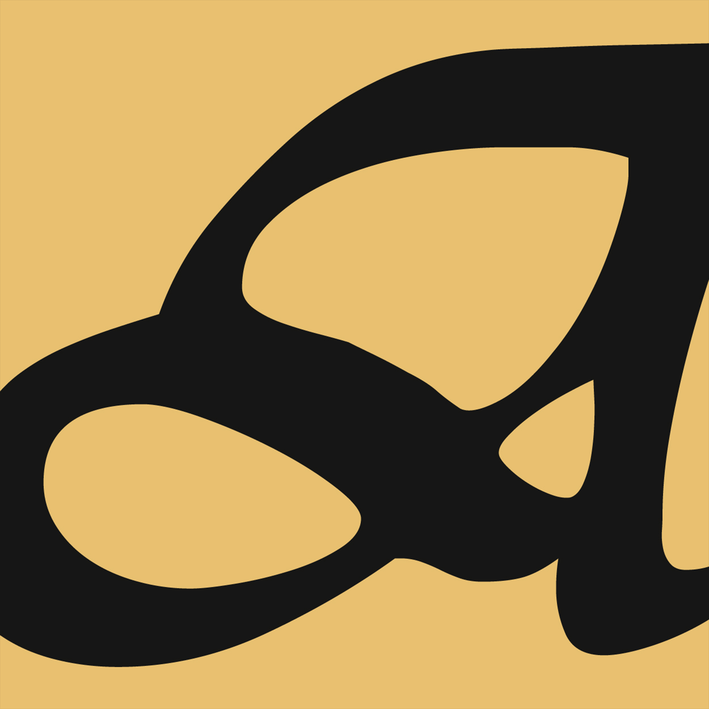

Opening Art Block
If the app doesn’t open automatically, tap the button below. Keep this page’s link intact — it finishes email confirmation or password reset.

If the app doesn’t open automatically, tap the button below. Keep this page’s link intact — it finishes email confirmation or password reset.